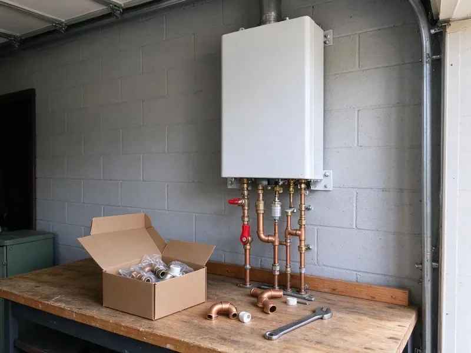

Water Softener Installation in Fayetteville, AR
Less scale, softer laundry and cleaner glass in your Fayetteville, AR home, from a new water softener.
- Workmanship Warranty
- Major Brands
- Loop Installs Available
- Licensed Plumbers

Water Softener Installs in Fayetteville, AR
Call (501) 251-9708 to book a water test and softener install.
Water Softener Installation in Fayetteville, AR
DGR Plumbing installs water softeners and conditioners that reduce calcium and magnesium. Homeowners near Fayetteville on well water benefit from periodic testing and the right filter to protect pipes and appliances. Left alone, that hardness leaves scale on fixtures and glassware and builds a thick layer of sediment in the bottom of the water heater tank. A quick test shows the level.
Work we handle every week:
- Full water testing
- Hardness tests and sizing
- Code-compliant installs

Additional Plumbing Installation Services in Fayetteville, AR
We install water heaters, pumps, lines, and fixtures across Fayetteville, AR with careful, permitted work that passes inspection the first time.


Customers
Why Choose DGR Plumbing for Water Softener Installation in Fayetteville, AR?
We install softeners that match your hardness and daily water use. You get soft water at every tap, reasonable salt use and fewer problems down the road. Metered valves save salt.
- Better Water, Soft water reduces scale and changes how water feels in the shower.
- Good Systems, We install long-lasting softeners from established brands.
- Accurate Testing, We test hardness and chlorine before we suggest a system.
Citywide Coverage
Anywhere in Fayetteville, DGR Plumbing shows up on time. The quality does not change by neighborhood.
Experienced Team
Each plumber at DGR Plumbing trains on new softener technology. Your system goes in the right way.
Safety-First Approach
Our team follows safety protocols throughout. The result meets every rule that applies.
Trusted Certified Fayetteville Plumbing Services Professionals
At DGR Plumbing, we take pride in licensed, certified plumbing services throughout Fayetteville, AR. Credentials matter in this trade. Our plumbers hold recognized industry credentials, and they follow strict safety and quality rules on every repair, installation and maintenance call we run.
Call Us Now PHCC Plumbing Contractor Recognition
PHCC Plumbing Contractor Recognition Better Business Bureau (BBB) Accreditation
Better Business Bureau (BBB) Accreditation Angi Certified Pro
Angi Certified Pro ISO 9001 Quality Management Certification
ISO 9001 Quality Management CertificationWater Treatment Installs in Fayetteville, AR
Whole-House Water Softener Systems in Fayetteville
On a whole-house system, the softener goes on the main line after the shutoff and before the water heater. We add a bypass valve so you can isolate the softener for service, and we install a pressure regulator if your street pressure runs above 80 psi. Every tap gets soft water. We can skip the hose bibs.

Salt-Free Water Conditioner Installation in Fayetteville
Salt-free conditioners do not soften water, and we say so up front. They change the minerals into crystals that do not stick to pipe walls and heating elements, so scale drops off without adding sodium or using a drain line. Maintenance is light. They suit moderate hardness.
High-Efficiency Water Softener Installation in Fayetteville
High-efficiency softeners use upflow brining and metered valves to cut salt and water use. A new metered unit often uses far less salt and water than an older model on a timer, which shows up on both bills. That pays back over time. We install several models.
Water Softener Replacement in Fayetteville, AR
Older softeners lose ground as resin wears out, valve seals leak or injectors clog. While the old system is out, we inspect the loop and the drain, then install a newer metered unit. Salt use drops. You will notice soft water the same day.
Water Hardness Testing and Programming in Fayetteville
Testing is what makes the settings right. Our crew checks hardness, iron and chlorine, then sets the regeneration and salt dosage to match. Iron changes the math. We review the settings with you before we leave.
Water Softener Installation for New Construction in Fayetteville, AR
Building a home in Fayetteville, AR? Adding a loop during framing is easy and cheap, since the plumber can route the main through the right spot before drywall goes up. Builders call us in early. Hose bibs can stay on hard water.
Water Softener Installation Cost in Fayetteville, AR
Cost depends on the system type, its capacity and whether a loop already exists. An existing loop keeps the price down, and adding a loop adds labor and materials. Carbon tanks cost extra. We put equipment, labor and setup on the quote.

Residential Water Softener Installation in Fayetteville
Hard water costs homeowners money in shorter appliance life and extra cleaning. Our residential installs start with a test and a few questions about water use, then we pick a grain capacity that regenerates about once a week for your household. Weekly is the sweet spot. One visit covers the full install.
Water Softener Plumbers Near You in Fayetteville, AR
Soft water makes a difference you notice in the first shower. Our crews cover the whole area around town and the nearby communities, and most installs get scheduled within a few days of the first call. Booking is quick.
Local plumbers know local water, and DGR Plumbing has tested a lot of it. We see the same hardness ranges and iron problems around here over and over, so we know which systems hold up and which ones need extra filtration. We respond fast.
DGR Plumbing at a Glance
- Fully licensed plumbing team covering Fayetteville, AR
- Same-day appointments and 24/7 emergency response
- Clear written estimates, no hidden fees
- 4.8-star rated by 871+ Arkansas customers
Fayetteville Map
Fayetteville Information
- Population
- 101,680
- Area codes
- 479/870/501
- Service area
- Fayetteville and towns within a 40 mile drive
- Nearby
- Springdale, Rogers, Bentonville, Bella Vista
Hard water leaves a white crust on faucet aerators and a layer of scale in the bottom of the water heater, which is why a softener makes sense in Fayetteville, AR homes. Homeowners near Fayetteville on well water benefit from routine testing and the right filter to protect pipes and appliances.
Talk to a Plumber
Reach out to DGR Plumbing for reliable plumbing work done by licensed pros in Fayetteville, AR.
Our Specialized Plumbing Services in Fayetteville, AR
At DGR Plumbing, we handle the full list of plumbing services across Fayetteville, AR. We go from leak detection all the way to full system installations, for homes and commercial buildings, and we do it quickly at a fair price. Take a look at our core services below:


What to Expect on a Softener Install in Fayetteville, AR
Here is what to expect when you book a softener install with us.
Request a Quote
Reach DGR Plumbing at (501) 251-9708 or by form. We talk through your hard water problem and book a visit.
On-Site Assessment
A plumber visits your Fayetteville home, tests hardness, checks the plumbing and goes over options. You get a clear estimate.
Installation
Once you approve, we install the system, connect the drain and test it.
Frequently Asked Questions About Water Softener Installation in Fayetteville
Most installs cost $1,500 to $4,000 including equipment. A new loop typically adds $500 to $1,500 based on access to the main.
On an existing loop, installs usually take two to three hours. Adding a new loop can take half a day or more.
We install Culligan, Pelican, Fleck, Kenmore, Whirlpool and GE, among others. You can pick with our help based on water and price.
Soap scum on shower doors, dry skin, dull laundry and white scale on faucets are the classic signs. We can run a hardness test in your home to confirm it, usually in a few minutes with a simple kit at the kitchen sink. No charge for it.
White scale on faucets, spotty dishes, dry skin and a water heater that struggles are common signs. A water test confirms hardness.
White, chalky scale on faucets and dishes is the most common sign. Dry skin, weak soap lather and dull laundry are other clues. A test will confirm it.
Fleck, Culligan, Ecodyne and Kenmore are some of the brands we install. We help you compare models and choose the one that fits your water and budget. Fit matters most.
Softeners remove hardness minerals using salt. Conditioners alter the minerals instead, and softeners are stronger for very hard water.
What People Are Saying About Our Plumbing Experts?

Robert G.
The camera showed a full break in our clay sewer line near the street. DGR Plumbing replaced it with a trenchless pipe burst, so the only digging was two small pits in the yard. They let us watch the footage before and after.
Sewer Line Replacement · Fort Smith, AR
Sofia M.
Two new toilets went in during one visit. The tech set them on new wax rings and swapped the old supply lines. He also noticed our bathroom faucet dripping and replaced the cartridge while he was there. No mess left behind.
Toilet Installation · Rogers, ARKevin O.
Before buying our house I paid for a sewer camera inspection. DGR Plumbing found a belly in the line that held standing water about forty feet from the cleanout. We used the video to get the sellers to fix it before closing.
Sewer Camera Inspection · Fort Smith, AR
Greg S.
I manage a small strip center with six tenants. DGR Plumbing handles our annual backflow testing and fixed a recurring clog in the shared sewer line that had been backing into the nail salon. Their reports come in clean and on time.
Commercial Plumbing · Rogers, AR
Diane F.
My kitchen faucet had dripped for months and I finally got tired of hearing it at night. DGR Plumbing came out the next morning, replaced the cartridge and the O rings, and tightened a loose base that was letting water under the sink.
Faucet Repair · Conway, ARMonica A.
Our water bill nearly doubled in one month with no change in how we used water. The tech checked the meter, heard the leak under the hallway with his equipment, and opened a hole about a foot square. Fixed the same day.
Slab Leak Repair · Conway, AR